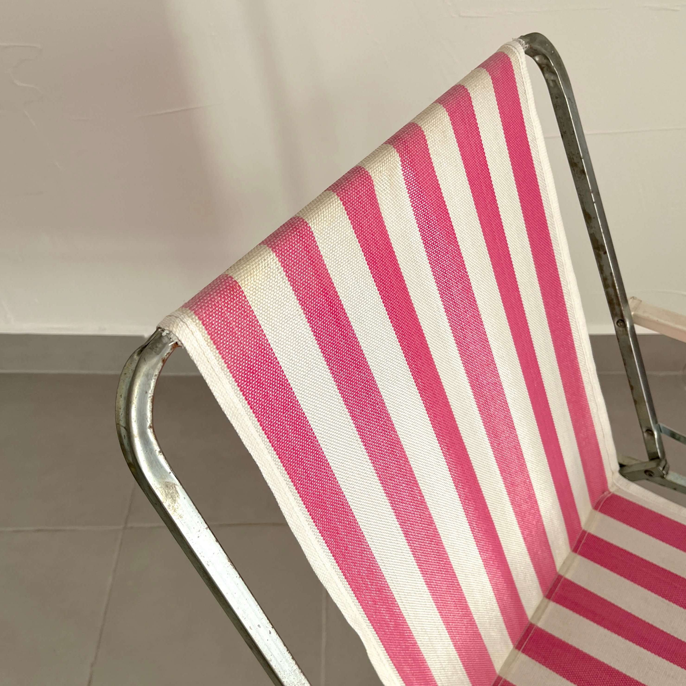
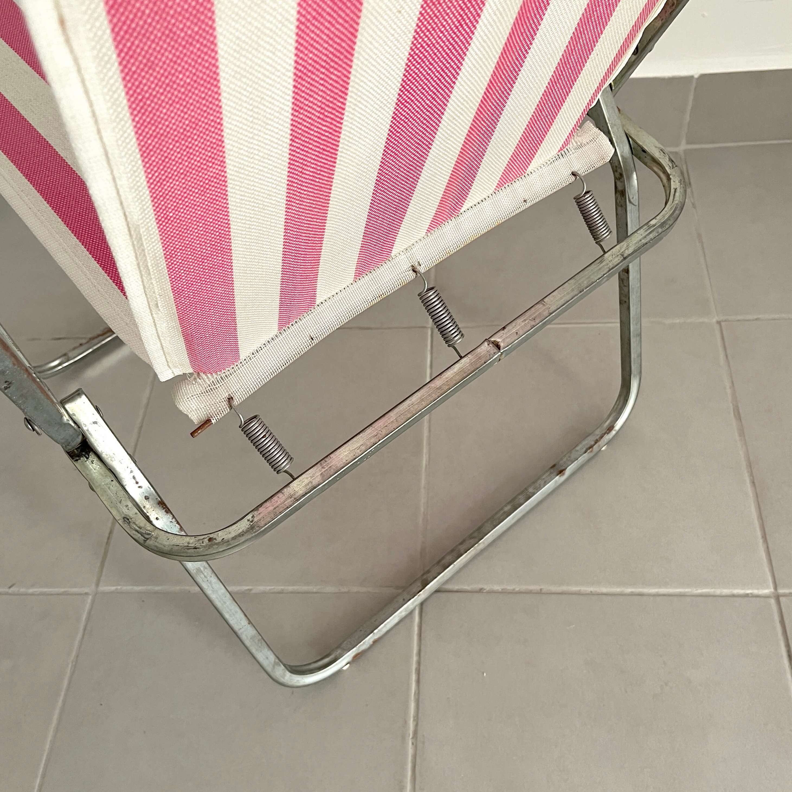
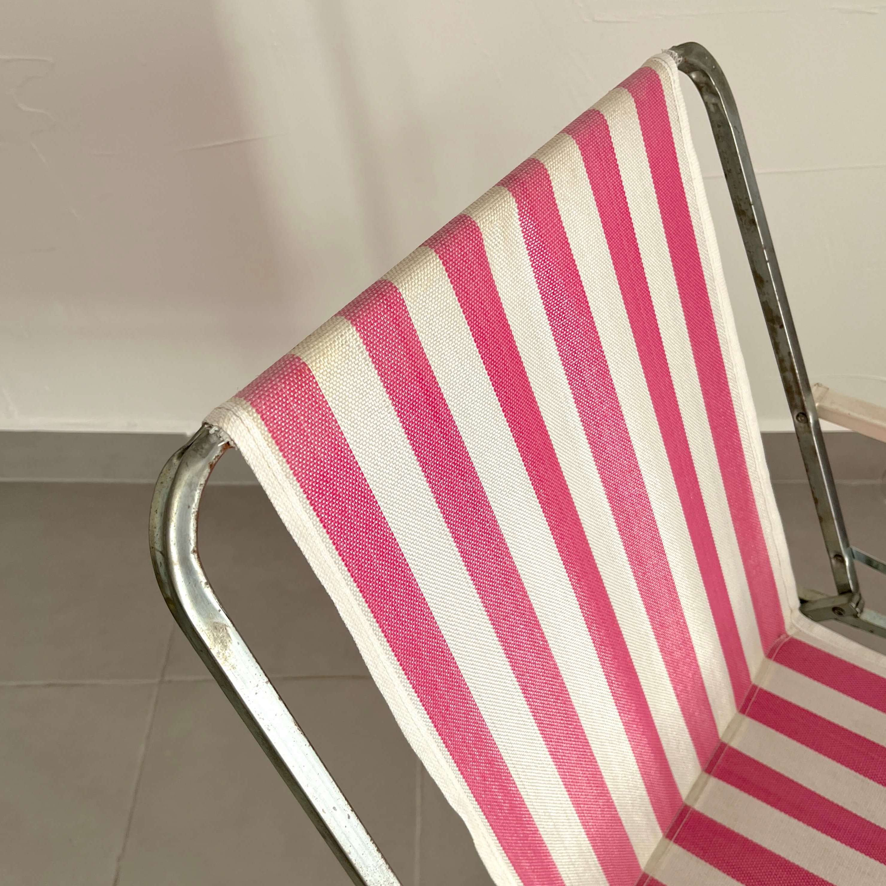
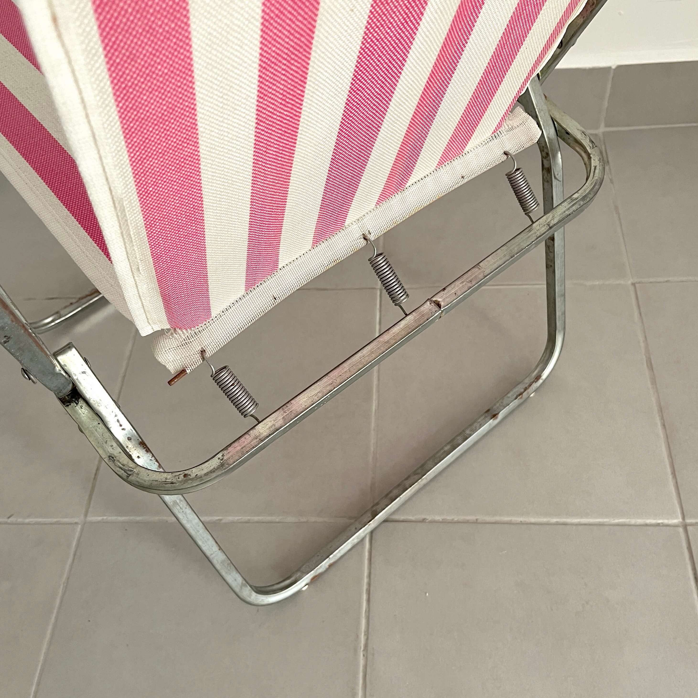

Silla plegable Lerolin vintage
Si te va apeteciendo pasar más tiempo fuera de casa que dentro lo que necesitas es una buena silla, una que además sea ligera, y si ya es bonita como está entonces lo tienes todo. A nosotros sin duda lo que más nos gusta son sus colores, estas rayas en las sillas antiguas como esta nos vuelven locos.
Esta silla está fabricada en Italia por Lerolin, tiene ya unos cuántos años, al menos 40, y aún así sigue haciendo perfectamente su función.
Los reposabrazos son de plástico, la tela en dos colores: rosa y blanco, y el "chasis" en metal. La silla es muy ligera y muy cómoda para transportar, además se abre y cierra muy fácilmente.
La silla se encuentra en el estado que se aprecia en las fotos, la tela está en buen estado y el metal presenta algunas zonas de óxido (ver fotos). Por si no lo sabías la forma más fácil de retirar este óxído es frotando con papel de aluminio, ¡verás que enseguida se va! Abre y cierra de maravilla.
30€
Comprar en Vinted ⟶
Escríbenos para comprarlo fuera de Vinted
 


